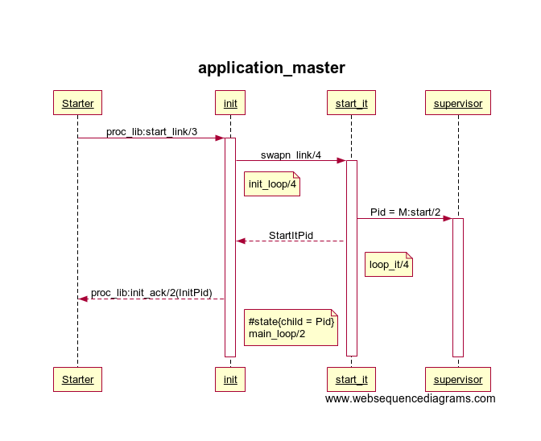

简介
application_master是OTP application的管理进程。application_controller控制Erlang虚拟机中所有的application，而application_master则管理单个application。application配置数据中的mod字段定义了application_master的回调模块和启动参数，回调函数start/5启动的通常为supervisor进程。
start_link/2
start_link/2通过proc_lib:start_link/3创建同步进程调用init/4来启动application_master进程。init/4首先和application_controller(Parent)建立link，设置group_leader为自己（相同group的进程IO都会被导到group_leader）；接着ac_tab中插入master进程信息，设置state；然后调用start_it/2来回调mod字段字义的模块启动函数。start_it/2启动新进程（因为application_master是group_leader，还要处理IO）来执行启动逻辑start_it/4，此时init/4进入到init_loop/4循环。start_it/4调用M:start/2启动监控树，然后返回自己Pid给init/4，进入到loop_it/4循环。init/4收到start_it返回的Pid后，记录到#state.child中，然后给上级的starter返回init/4进程Pid，此时application_master启动完毕。
|
|

stop/1
通过给application_master发stop消息来结束进程，这里通过receive来进行同步关闭。application_master收到stop消息后，调用terminate/2来结束#state.child和#state.children里记录的进程。terminate_child/2通过给Child发terminate来结束进程，Child进程也就是start_it/2里启动的进程，然后applicatin_master进入到terminate_loop/2循环，等待Child进程结束。kill_children/2通过给进程发{‘EXIT’, Parent, kill}消息（exit(Pid, kill)）来结束，同时用同样的方式结束没有记录在#state.children而group_leader是application_master的进程。Child进程在收到terminate消息后，先执行回调模块的prep_stop/2函数，进行结束前的一些处理，然后给M:start/2启动的监控树进程发送{‘EXIT’, Parent, shutdown}（exit(Pid, shutdown)）消息来结束监控树，最后再调用回调模块的stop/1函数，此时Child关闭。
总结
application_master进程启动时是同步的，而同时又作为group_leader进程，假如M:start/2函数里有IO请求，就会造成死锁，所以需要额外新起个start_it/4进程来执行启动过程。application_master进程是application这组集合的group_leader。